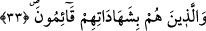
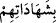

Verdiğin her söze vefâ göster,
Hakk’ın senden istediği ibâdetleri yerine getir.
Büyüklerden birisi şöyle der: Kim ki emânet sıfatıyla sıfatlanır ve sırları
saklayabilirse, ölülerin sözlerini, çektikleri azâbı ve tattıkları nimetleri duyar. Tıpkı
dilleri olmadığı için hayvanların, kabirde yatanların çektikleri azâbı işitmeleri gibi.
Aynı şekilde, emânetle vasıflanan kişi, dünyada uzuvlarının kendisine söylediği sözleri
de işitir. Zîrâ onlar canlıdırlar, konuşurlar ve zâten bu sebeple de Kıyâmet Günü
şâhidlik yapmaları istenecek ve onlar da şâhidlikte bulunacaklardır.[114] Şâhidliği de hiç
şüphesiz ancak âdil ve kendisinden râzı olunan kimseler yapabilirler.
et-Te’vîlâtü’n-necmiyye’de deniyor ki: Allah Teâlâ bu âyet-i kerîmede göklere, yere
ve dağlara teklif edilen emânete işâret ediyor. Bu emânet, mazhariyetin kemâli ve ilâhî
müşâbehetin tamamıdır. Yine bu âyet-i kerîmede “Ben sizin Rabbiniz değil miyim?
(Onlar da), «Evet, Rabbimizsin…».” [115] şeklinde bahsedilen mîsâk ve ahde işâret
edilmektedir. Bu ahde riâyet, şerîata muhâlif ve nefsin hevâsına uygun olan şeyleri
yapmamakla gerçekleşir.
Âriflerden biri bu âyet-i kerîmeyi şöyle tefsîr eder: Onlar, emânetlerine; yâni Cenâb-
ı Hakk’ın fıtrî olarak kendilerine tevdî ettiği aklî mârifetlere ve ezelde kendilerinden
almış olduğu ahidlerine riâyet ederler, fıtratlarını tabiî perdeler ve nefsânî heveslerle
kirletmezler.
33. Şâhidliklerini (dosdoğru) yapanlar;
“/şâhidliklerini” kelimesindeki bâ, kâimûn kelimesine bağlıdır. Bu, ister
tâdiye/geçişlilik, isterse mülâbeset/yakın münâsebet yoluyla olsun farketmez. Bu
kelimenin çoğul getirilmesi de şâhidliğin çeşit çeşit oluşundan dolayıdır. Yâni onlar
şâhidliklerini adâletle yerine getirenler, insanların haklarını ihyâ için bunu vaktinde edâ
edenlerdir. “Şâhidliği yapmak”tan murâd, aleyhine şâhidlik edeceği kimse ister yakını,
ister uzağı, ister şerefli, ister alt tabakadan biri olsun hâkimlerin yanında bu vazifeyi
adâletle îfâ etmektir. Peygamber Efendimiz (s.a.) şöyle buyurur: “(Şâhidlik yapacağın
hâdiseyi) güneş gibi net olarak bildiğin takdirde şâhidlik yap, yoksa bırak!” [116]
“Şâhidliği adâletle yapma”nın, aslında “emânetlere riâyet” vazifesine dâhil olduğu
hâlde burada husûsî olarak bir daha zikredilmesi, fazîletini açıkça ortaya koymak
içindir. Çünkü şâhidliğin yerine getirilmesinde, hakların ihyâsı ve sıhhate
kavuşturulması söz konusudur. Gizlenmesi ve yapılmaması hâlinde ise hakların zâyî
edilmesi ve iptali vardır.
el-Eşbâh isimli eserde deniyor ki: Eğer hak, şâhidliğin dışında başka bir yolla yerine